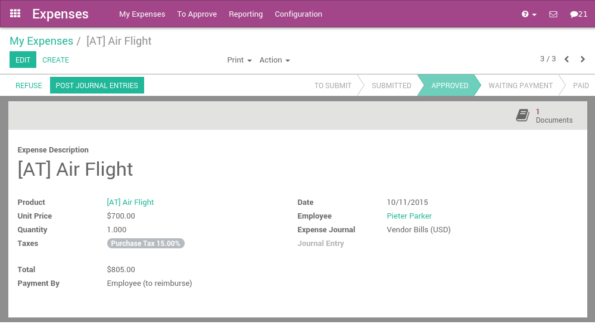

Employee expenses are charges incurred on behalf of the company. The company then reimburses these expenses to the employee. The receipts encountered most frequently are:
- car travel, reimbursed per unit of distance (mile or kilometer),
- subsistence expenses, reimbursed based on the bill,
- other purchases, such as stationery and books, destined for the company but carried out by the employee.
Configuration
To manage expenses, you need to install the Expense Tracker application from the Apps module.
You will also need to install the Sales Management module in order to re-invoice your expenses to your customers.
Once these applications are installed you can configure the different products that represent the types of expenses. To create the firsts products, go to the menu in the Expenses application.
Some examples of products can be:
Travel (car)
- Product Type: Service
- Invoicing Policy: Invoice based on time and material
- Expense Invoice Policy: At sales price
- Sale Price: 0.32
- Unit of Measure: Km or mile (you will need to enable the Multiple Unit of Measures option from )
Hotel
- Product Type: Service
- Invoicing Policy: Invoice based on time and material
- Expense Invoice Policy: At cost
- Unit of Measure: Unit
In these examples, the first product will be an expense we reimburse to the employee based on the number of km he did with his own car (e.g. to visit a customer): 0.32€ / km. The hotel is reimbursed based on the real cost of the hotel.
Be sure that all these products have the checkbox Can be expensed checked and the invoicing policy set to Invoice Based on time and material. This invoicing policy means that, if the expense is related to a customer project/sale order, Odoo will re-invoice this expense to the customer.
Odoo support two types of expenses:
- expenses paid by employee with their own money
- expenses paid with a company credit card
The expenses workflow
Record a new expense
Every employee of the company can register their expenses from . The workflow for personal expenses work that way:
- an employee record his expense, and submit it to the manager
- the manager approve or refuse the expense
- the accountant post journal entries
- the company reimburse the employee expense (the employee is like a vendor, with a payable account)
- if the expense is linked to an analytic account, the company can reinvoice the customer
For every expense, the employee should record at least:
- a description: that should include the reference of the ticket / bill
- a product: the expense type
- a price (e.g. hotel) or a quantity (e.g. reimburse km if travel with his own car)
Depending of the policy of the company, he might have to attach a scan or a photo of the expense. To do that, just a write a message in the bottom of the expense with the scan of the bill/ticket in attachment.
If the expense is linked to a customer project, you should not forget to set an analytic account, related to the customer project or sale order (you might have to activate analytic accounts in the accounting settings to get this feature).
Once the expense is fully recorded, the employee has to click the button Submit to Manager. In some companies, employees should submit their expenses grouped at the end of the month, or at the end of a business trip.
An employee can submit all his expenses in batch, using the Submit Expenses action from the list view of expenses, or the small icons in the list view.
Validation by the manager
Managers should receive an email for every expense to be approved (the manager of an employee is defined on the employee form). They can use the menu To Approve to check all expenses that are waiting for validation.
The manager can:
- discuss on an expense to ask for more information (e.g., if a scan of the bill is missing);
- reject an expense;
- approve an expense.
Control by the accountant
Then, all expenses that have been validated by the manager should be posted by the accountant. When an expense is posted, the related journal entry is created and posted in your accounting.
If the accountant wants to create only one journal entry for a batch of expenses, he can post expenses in batch from the list view of all expenses.
Reinvoice expenses to customers
If the expense was linked to an analytic account related to a sale order, the sale order has a new line related to the expense. This line is not invoiced to the customer yet and will be included in the next invoice that will be send to the customer (charge travel and accommodations on a customer project)
To invoice the customer, just click on the invoice button on his sale order. (or it will be done automatically at the end of the week/month if you invoice all your orders in batch)
Reimburse the employee
If the expense was paid with the employee's own money, the company should reimburse the employee. In such a case, the employee will appear in the aged payable balance until the company reimburse him his expenses.
All you have to do is to create a payment to this employee for the amount due.
Miscellaneous
Expenses that are not reinvoiced to customers
If some expenses should not be reinvoiced to customers, you have two options:
if the decision to invoice or not is related to the product, change the invoicing policy on the product:
- based on time and material: reinvoice the customer
- based on sale orders: do not reinvoice the customer
- if you have to make an exception for one invoice that should not be reinvoiced to the customer, do not set the related analytic account for this invoice.